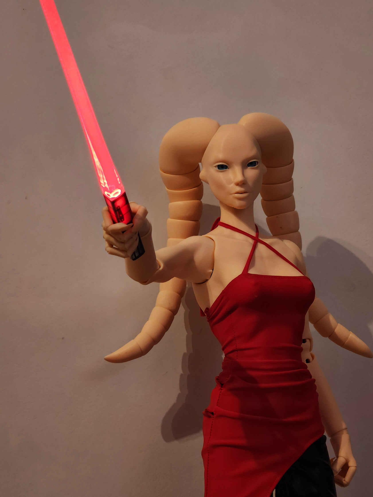
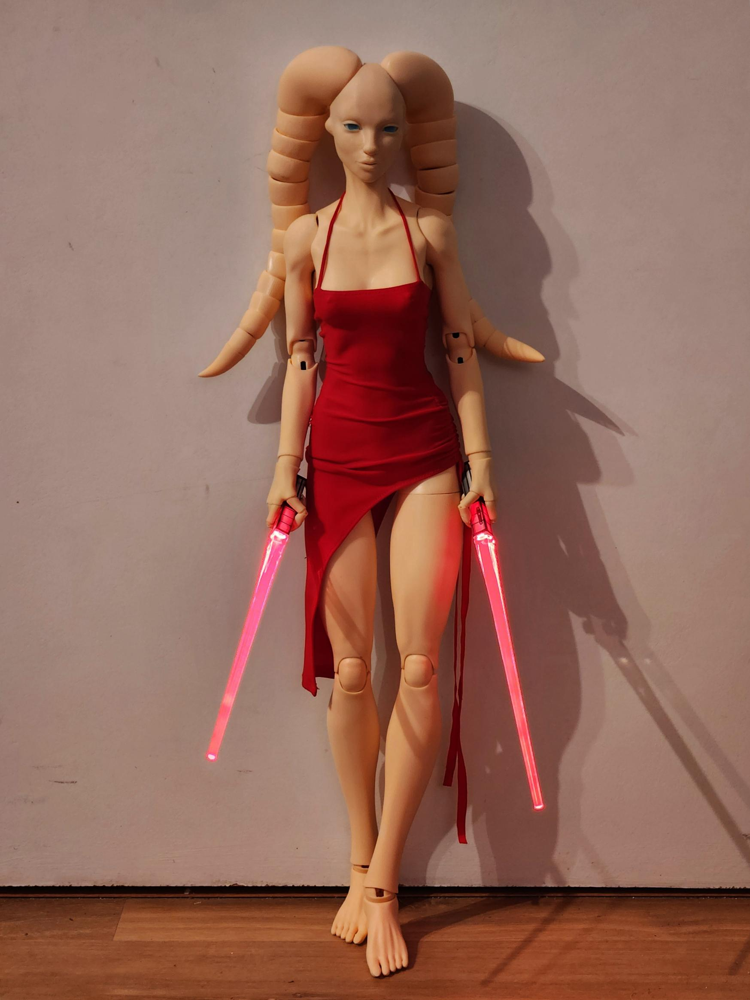
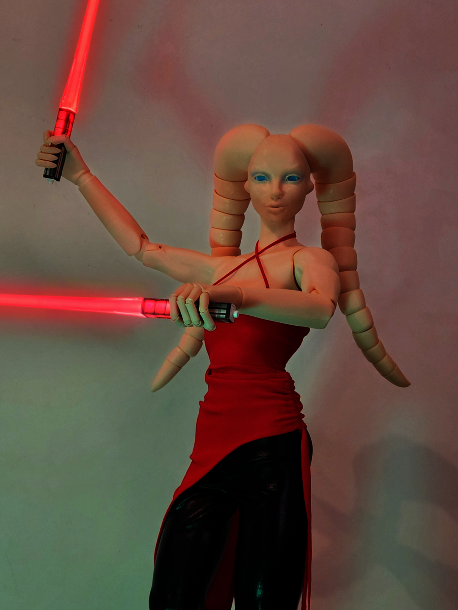
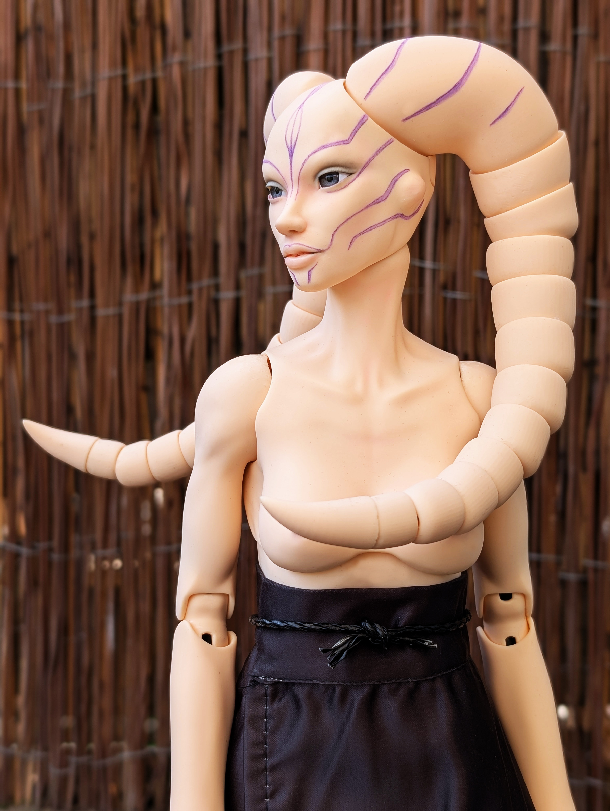
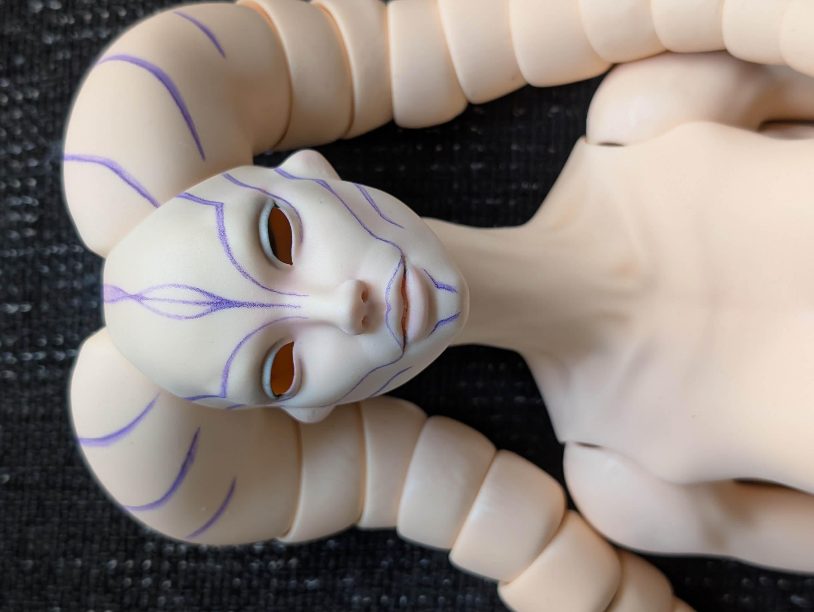
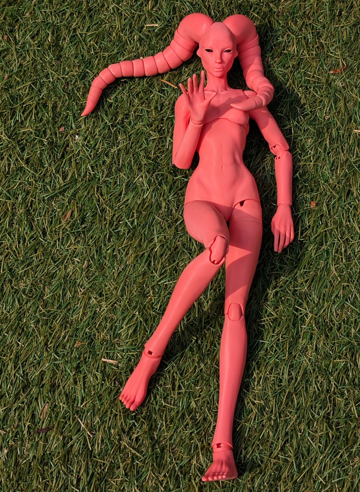
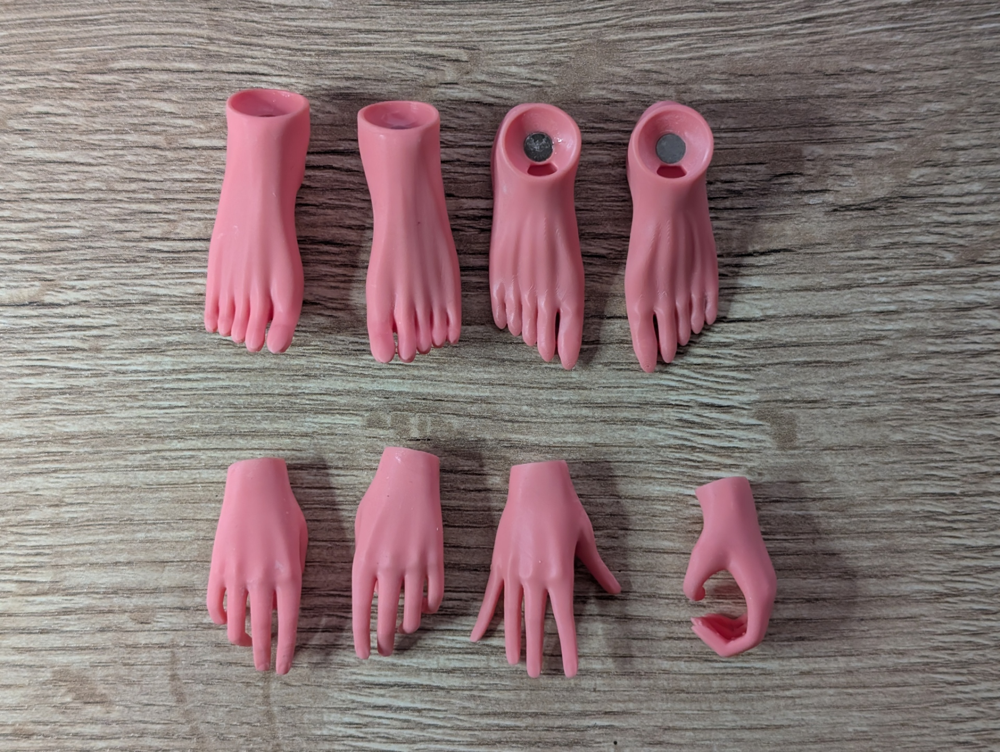
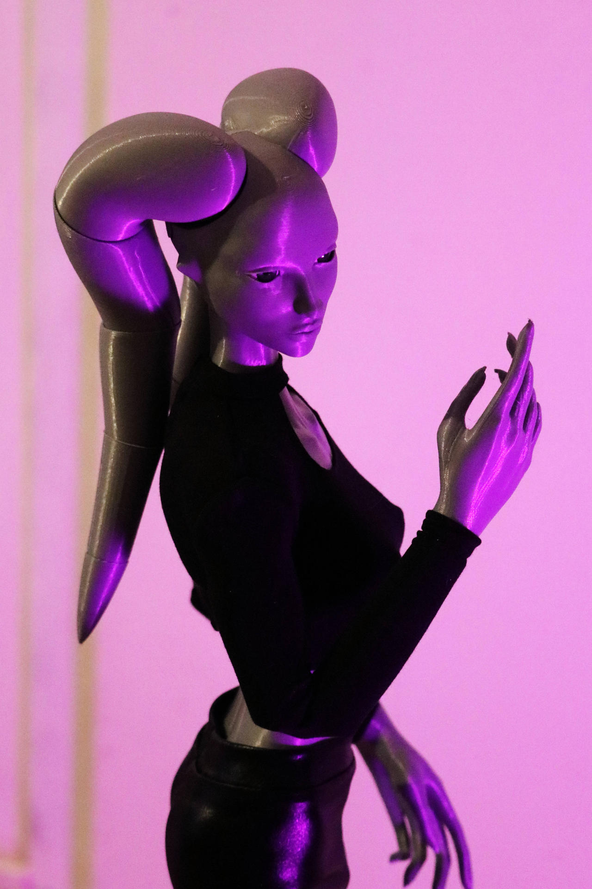
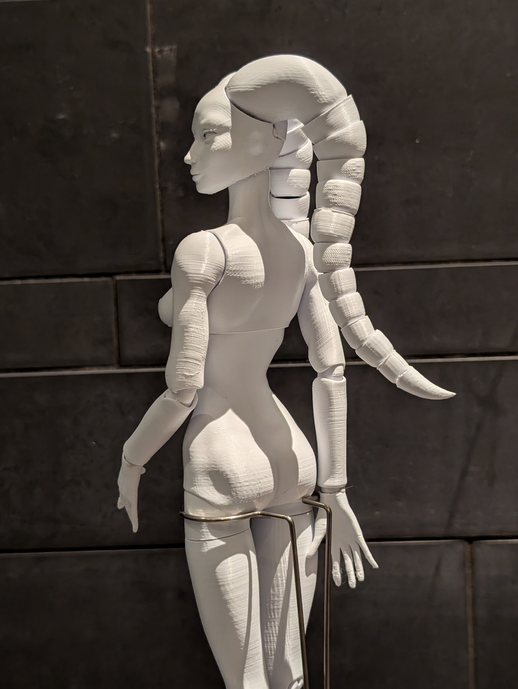

Twi'lek BJD

Join me!

You don't understand, I use the dark side to do good! Sometimes, you first have to burn down the old...

Take my hand... and we will build a better world together.

Join me... Or become my enemy.

Much earlier...


First resin version.





First assembly after paint & getting her outfit



Face up and body blushing.

Doing some face-up work. Lots of room for creativity with Twi'leks!

Twi'lek done on a much smaller scale.




Post printing cleanup and test fitting. Lots of sanding.

Hands and feet options for the small version.

Prototype printed in PLA.


Small scale prototype printed in PLA.